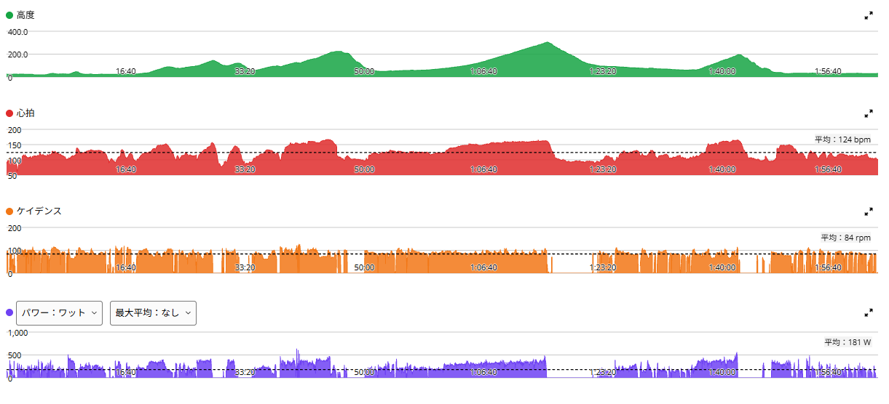
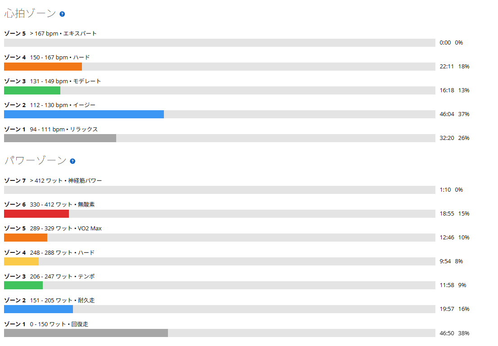

特に事件はない。でも、こういう日を淡々と積み重ねたい
今日は太平山反時計回り。昨日はレストにしたので、走り出しから脚が軽かった。最初に言っておくと、今日は特に事件がない。友人と偶然会ったわけでも、新しいコースに行ったわけでも、トラブルがあったわけでもない。
最近は同じコースを何度も走っているので、毎回大きな発見があるわけではない。そのかわり、太平山は7分前後、琴平峠は300W前後、最後の唐沢山は約5分全力という自分なりの基準が、少しずつ見えてきている。今日はそれを淡々とこなした日だった。

約51km・NP253W・TSS171
- 全体51.46km / 2時間01分38秒 / 獲得803m / 平均気温20.9℃
- 負荷平均181W / NP253W / IF0.920 / TSS170.9
- 心拍・回転平均124bpm / 最大167bpm / 平均84rpm
- 効果有酸素TE4.1 / 運動負荷188
- 太平山6分59秒 / 332W / 心拍平均152bpm・最大167bpm / 92rpm
- 琴平峠14分17秒 / 314W / 心拍平均153bpm・最大165bpm / 89rpm
- 唐沢山5分29秒 / 359W / 心拍平均149bpm・最大165bpm / 83rpm
同じ太平山反時計回りで、太平山7分切りを出した10月8日と、前回の10月12日と並べるとこうなる。
- 10月8日太平山 6分57秒・321W / 琴平 14分18秒・309W / 唐沢 5分49秒・331W / NP248W / 24.4℃
- 10月12日太平山 7分02秒・319W / 琴平 14分19秒・297W / 唐沢 5分25秒・354W / NP247W / 23.5℃
- 10月15日太平山 6分59秒・332W / 琴平 14分17秒・314W / 唐沢 5分29秒・359W / NP253W / 20.9℃
太平山は7分切り。目安クリア
太平山は7分を少し切って332W。当面の目安にしている「7分前後」はクリアした。7分切りは10月8日に続いて2回目である。平均332Wは反時計回りで一番高いのに、タイムは10月8日にわずかに届かない。
毎回タイムアタックをするつもりはない。ただ、このくらいを狙わずに再現できる回数が増えてくれば、今の走力の目安として分かりやすくなる。
琴平峠は314W
琴平峠の目安は300W前後。今日は314Wで、約14分。太平山で332Wを出した後に、14分以上を314Wでまとめられた。反時計回りの琴平峠では出力もタイムもわずかに今日が上。タイムはほぼ横並びで、14分20秒前後に収まってきた。
最後の唐沢山は359W。約5分を出し切った
最後の唐沢山は約5分半・359W。今日も約5分、しっかり全力で登った。出力は反時計回りで一番高いが、タイムは10月12日の方が少し速い。
唐沢山については、数値を絶対目標にはしていない。5倍前後はひとつの目安だが、一番大事なのは「最後に約5分、しっかり出し切る」こと。数字そのものより、太平山と琴平峠をこなした後に、最後まで高い出力で登れたことの方を重視する。
ゾーン6が約5分増えた

パワーゾーンを見ると、ゾーン6（330〜412W）が約19分で全体の15％。10月12日の同じ太平山反時計回りでは約14分・11％だったので、約5分増えている。一方でゾーン7は1分ほどで、10月12日より短い。短いダッシュが増えたというより、短い登りや太平山、唐沢山で330W以上を保つ時間が増えた、という方が近いのかもしれない。まだ1回の比較なので、そう見えるという程度にしておく。
地味な日の方が、たぶん多い
こういう日は、ブログとしては少し地味である。でも富士ヒルまでの日々は、たぶんこういう日の方が圧倒的に多い。毎回何か特別なことが起きるわけではない。その中で同じ練習を繰り返して、少しずつ数字が変わっていく。今はそれで十分だと思っている。
最近は「今日は何か特別なことをしなければ」という感じがあまりなくなってきた。太平山反時計回りを走る。ローラーをやる。唐沢ゴルビーをやる。MTBで遊ぶ。必要ならレストする。その繰り返し。派手さはないが、こういう日の積み重ねが最終的には一番大きいのだと思う。数字を見ると、少しずつ前には進んでいる。なので今は、焦って新しいことを増やすより、このまま淡々と続けていこうと思う。
次に見るポイント
- 太平山7分前後を、狙わなくても普通に再現できるか
- 琴平峠300W前後を、気温や疲労が違う日でも出せるか
- 唐沢山最後の約5分全力を、毎回の習慣として続けられるか
- ゾーン6330W以上の時間が、次の反時計回りでも同じくらい出るか